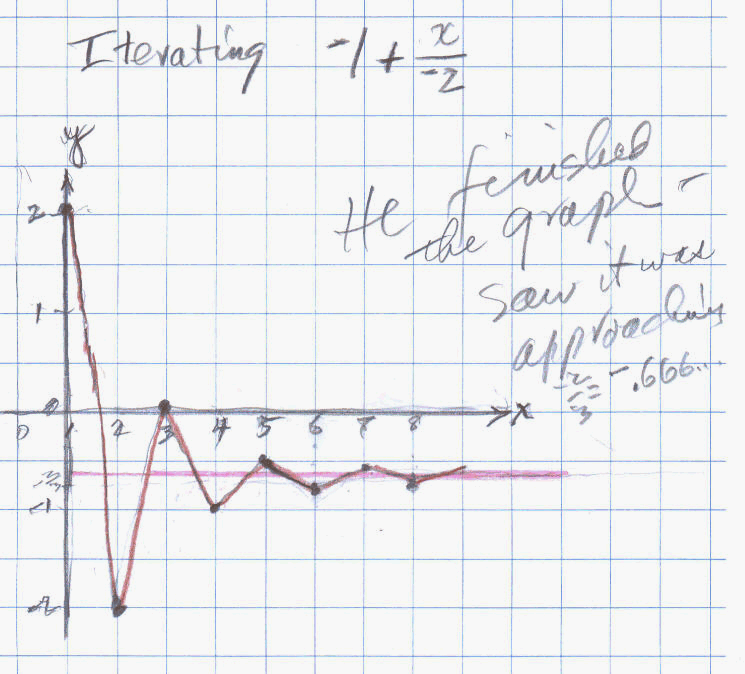

Chris, and 8th grader, iterated the function a + x/b using negative numbers for a and b!!
Chris had figured out that when you put a number in for x, then put the answer back in for x, and keep doing that, it would form an infinite sequence that goes to some number. For example, if the function is 5 + x/2 and he put in 4 for x, he got 5+4/2 = 5+2=7 out. Then he put 7 back in for x, and he got 5+7/2= 5+3.5= 8.5 out. This sequence he found 4, 7, 8.5, 9.25, 9.625, 9.8125, 9.90625, 9.953125, ... which increases and approaches 10. Doing a number of others like 6 + x/2 which goes to 12, he realized that it would go to a*b. Then Don gave him 6+x/3 which he predicted would go to 18, but instead it went to 9. How do you get 9? Well that's 6*3/2 = 9. Again, doing a number of these, starting with like -1000, or 1000 in for x, all the numbers formed a sequence that went to the same number. Don had Chris figure out that all these type functions go to a*b/(b-1) .
Then Don asked Chris to check this and he said to start with the function -1 + x/ -2 . This was the first time in the 15 years Don had worked on this problem, that a student had used negative numbers for a and b! So now Don was going to learn something. Would the sequences found work the same way? The first thing Don had Chris do, was to check the generalization above to predict what number the sequences formed would go to.
a + x/b -> a*b/(b-1)
To get -1 + x/ -2, Don had Chris put -1 -> a and -2 ->b. He got (-1 x -2)/(-2 -1) and with a lot of discussion about multiplying -1 x -2 = 2 and -2 -1 = -3. So he ended up with 2/-3 =-2/3 = - 0.6666...Don wanted to make sure that when Chris started with a number in for x to get an infinite sequence, he would be able to recognize whether the decimals he would get where going to -2/3 = - 0.6666... or not.
The interesting thing Don does in his work, is to do some important mathematics, like infinite sequences and limits, but in the process the student does lots of arithmetic along the way.
Now everything took some discussion and questioning back and forth. He knew certain things like multiplying and adding negative numbers, but may have forgotten some of it or didn't have a "model" like a number line, which he could use to do these. He, like many youngsters wanted to reverse the division (like 3 divided by 6, they want to do 6 divided by 3). Add to this was the fact that he couldn't use instant messenger or Don's webcam picture (because of a virus), so neither Don nor Chris could see each other's work and they were communicating mostly by telephone at this point!! Chris also wanted to use a calculator for everything, but Don insisted he do things by hand to make sure he could do it! Chris is getting an A in math in school, but he is doing things that he has had before. Watch what happens here.
They ended up with this sequence:
2, -2, 0, -1, -0.5, -0.75, -0.625, -0.6875, -0.65625, -0.671875, -0.66406225, ...
Here is how they did it. Check to see if what he got below, is in the sequence above.
Chris started with 2 in for x, or 2->x, and he got
-1 + 2/ -2 = -1 + -1 = -2 then he put -2 in for x
-1 + -2/ -2 = -1 + 1 = 0 then he put 0 in for x
-1 + 0/ -2 = -1 + 0 = -1 then he put -1 in for x
-1 + -1/ -2 = -1 + 0.5 = -0.5 then he put -1 in for x
So far they had 2, -2, 0, -1, -0.5, and Don asked Chris if he saw something. He realized that the numbers were alternating, something they had not done before.
-1 + 0.5 was a problem, -0.5/2 was a problem, but they got things worked out. This problem was not done at one session.
Below is the graph Don made of this sequence 2, -2, 0, -1, -0.5, -0.75, -0.625, -0.6875, -0.65625, -0.671875, -0.66406225, ... It was Chris' idea to graph the starting number as (1, 2), that's why Don has the y-axis at 1.

Fine work Chris!!